Created by Unicorns
Illustrated by @brianmehrman
pbcopy and pbpaste were the new kids at OSX High School.
All the students picked on them because they could never do anything on
their own. Teachers thought they were weird for always playing with
pipes.
Can't read property 'event_dt' of undefined."Eureka!", Ada exclaimed. "The JSON response must have changed!"
pbpaste wandered by noticing the frustration in Ada's slouch.
pbpaste > data.json
pbpaste responded, "It's because I have direct access
to the pasteboard. I can read it to any file or command. Watch this!
pbpaste | jq . > formatted.json
jq to pretty format the JSON. All without a bloated IDE slowing things down."
pbcopy, to get the results back into the pasteboard!"

pbpaste yelled down the hallway, "pbcopy get over here! Let's show Ada our sweet moves!"
pbpaste | jq . | pbcopy
pbcopy sat back as if she'd just finished a big meal. She gloated, "When I work together with pbpaste, you won't need to waste brain cells thinking of clever temporary file names!"
pbcopy responded, "That's even better! When you're in IRB, try piping the data straight to me."
IO.popen('jq . | `pbcopy`', 'w') do |io|
io.write(items.to_json)
end
IO.popen('jq . | `pbcopy`', 'w'){|❤️| ❤️ << items.to_json}
pbcopy says, "if you want to read from the clipboard, use backticks!"
lines = `pbpaste`.split("\n")
~/.pryrc which makes working with us even easier!"
def copy(data=nil)
IO.popen('pbcopy', 'w') do |io|
if block_given?
yield io
puts "\e[34mCopied block!\e[0m"
elsif data
io << data.to_s
puts "\e[34mCopied data!\e[0m"
else
puts "\e[31mNothing to copy :(\e[0m"
puts "\e[34m Try `copy { |c| c << data }`"
puts " or `copy data`\e[0m"
end
end
end
copy _ to send the last result to the pasteboard!"
copy _pbpaste noticed an odd misspelling.
{
posts: ["..."]
aggendas: ["..."]
}
pbpaste asked.
pbcopy jumped in quickly, "Correction, it only has one 'j'!"
